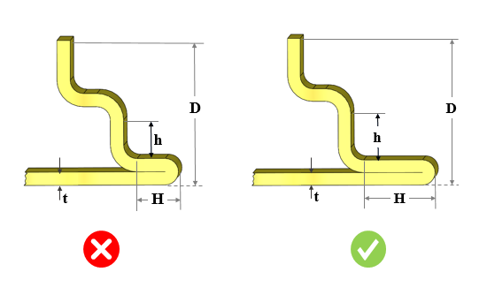

曲げを伴うクローズドヘムのパラメータは、ユーザーが指定した値以上である必要があります。
曲げ加工においては、板材と工具との間に十分な接触が必要です。接触が不十分な場合、板材がせん断されたり、不適切な曲げが発生する可能性があります。そのため、返しフランジ長さ（H）に沿って十分な接触面積を確保する必要があります。また、フランジが曲げ工具に接触しないように、フランジ高さ（h）はガイドラインに従って設定する必要があります。
最小フランジ高さ（h）は、板厚の2.5倍以上である必要があります。
返しフランジ長さ（H）は、板厚の3.5倍以上である必要があります。
DFMPro は、曲げを伴うクローズドヘム形状を識別し、そのパラメータを構成された値と照合して検証します。
ユーザーは、デフォルトで構成されている値を編集することができます。

ここで、
t = 板厚
D = ベースから上端までの最大距離
h = 最小フランジ高さ
H = 返しフランジ長さ